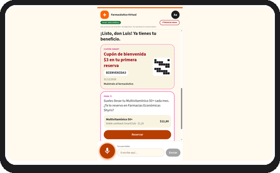
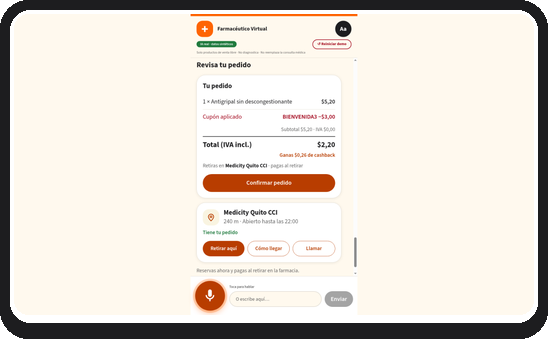
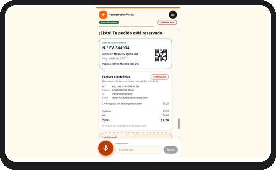
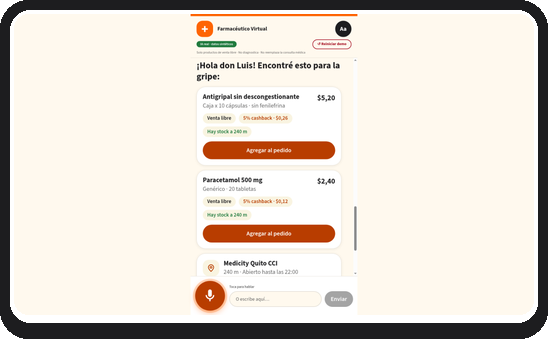
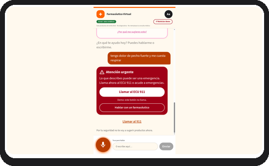

Demo · datos simulados
Connect atVentures 2026 · Farmaenlace
Farmacéutico Virtual
Tu farmacéutico más cercano, en el celular.
Eric Aguayo · Co-fundador y Director de IA Aplicada, Nimblersoft
Reto: Fidelización transversal
1 / 8
Hola, soy Eric Aguayo, co-fundador y director de IA aplicada en Nimblersoft. Pensemos en esa señora adulta que va a Farmacias Económicas cada mes por su vitamina. Según ella, le toca ir porque las apps de hoy la abruman con catálogos, filtros, formularios y botones. Entonces no las usa. Para ella hice el Farmacéutico Virtual: tu farmacéutico más cercano, en el celular.
Demo · datos simulados
Problema
Compran una vez y no vuelven;
lo digital no les sirve.
4 de 5
marcas: más de la mitad de los clientes compra una sola vez
~2%
de las ventas es online
Status quo: catálogos, filtros, formularios → no los usan → van o llaman a la farmacia.
Medicity 50,38% · Farmacias Económicas 38,77% (compra única).
2 / 8
Farmaenlace lo dice en su propio reto: en cuatro de cinco marcas, más de la mitad de los clientes compra una sola vez. Y solo cerca del dos por ciento de las ventas es online. Ustedes quieren pasar de la transacción a la relación. La puerta digital existe, pero cuesta cruzarla.
Demo · datos simulados
Propuesta de valor
Le hablas y te arma
la pantalla justa.
Para clientes de Farmacias Económicas y Medicity que evitan las apps por complicadas, ofrecemos un farmacéutico virtual al que le hablas y te arma la pantalla que necesitas; a diferencia de catálogos y formularios, comprar —y volver a comprar— es tan fácil como preguntarle a tu farmacéutico.
AntesCatálogos · filtros · formularios
Después1 tarjeta · voz primero · hecha para ti
3 / 8
Para los clientes de Farmacias Económicas y Medicity que evitan las apps porque les resultan complicadas, ofrecemos un farmacéutico virtual al que simplemente le hablas y te arma la pantalla que necesitas. Sin catálogos ni formularios: comprar, y volver a comprar, es tan fácil como preguntarle a tu farmacéutico.
Demo · datos simulados
Demo en vivo · ~50 s
Hablas → UI en segundos
→ reservas → vuelves.
- QR + cupón → cédula → consulta por voz
- Tarjetas OTC con precio, cashback SmartClub y stock
- Reservar y retirar en farmacia
Cuidador / Práctico
Reposición personalizada
Doble cashback



Abre la PWA
main.d2bloxc35rzfqy.amplifyapp.com
4 / 8
Demo en vivo. Escaneo el QR en la farmacia y ya tengo mi cupón. Solo mi cédula. Nada de formularios. Es cuidador: letra grande y voz primero. Personaliza por cómo compras. Nunca nombra una condición. Antes de sugerir, pregunta por seguridad. Aquí la IA real arma esta pantalla. Se aplicó su cupón y gana cashback SmartClub. Reservado. Retira y paga en la farmacia.
Demo · datos simulados
Diferenciador
No es un chatbot:
la interfaz se arma para cada persona.
🎙
Voz primero · A2UI
Interfaz generativa conversacional. Sin formularios.
👤
Por arquetipo
Fidelizar con datos. Personaliza por comportamiento; nunca nombra condición.
🛡
Guardrails
Solo OTC. Sin diagnóstico. Alarma → alerta roja ECU 911 + hand-off humano.


5 / 8
No es un chatbot que responde texto: la interfaz se genera para cada persona. Es fidelizar con datos, por marca y arquetipo, como pide su reto. Personaliza por lo que compras y nunca menciona tu condición. Solo venta libre, nunca diagnostica, y ante una señal de alarma muestra una alerta roja con el ECU 911 y te pasa con un farmacéutico humano.
Demo · datos simulados
Arquitectura · real vs simulado
Un modelo de decisión decide;
el LLM solo arma la pantalla.
🎤 Voz / texto
→
GLiNER
decide intención y entidades
→
Guardrails + reglas
solo venta libre · alarma → ECU 911
Claude Haiku 4.5
arma la pantalla (A2UI)
←
Validador
si falla → plantilla segura
←
PWA / web
API simulada Farmaenlace · ⇅ HTTP firmado con Guardrails + reglasCRM · catálogo · stock · SmartClub · pedidos · factura
Menos alucinaciones · más rápido · más barato que un LLM que decide y arma todo.
6 / 8
Por dentro, no dejamos todo a un solo LLM. Un modelo de decisión, GLiNER, entiende qué pides. Reglas y guardrails deciden qué se puede ofrecer. Recién ahí Claude Haiku arma la pantalla, y se valida antes de mostrarse. Menos alucinaciones, más rápido y más barato. Lo simulado son las APIs de Farmaenlace, con datos sintéticos.
Demo · datos simulados
Piloto contra sus KPIs
No reemplaza nada;
se mide contra control y escala solo con datos.
1
Canario 1%
App nueva opt-in sobre las APIs actuales. 1% de la web.
2
Piloto QR
Pocas Farmacias Económicas / Medicity vs control.
3
A/B 10–50%
Escala web solo si los datos lo respaldan.
KPI norte: recompra 30 / 60 días vs control
7 / 8
¿Cómo llega a producción? No reemplaza nada: es una app nueva, opcional, sobre las APIs que Farmaenlace ya tiene. Primero, el uno por ciento de la web. Luego, QR en unas pocas farmacias contra farmacias de control. El KPI es su KPI: recompra a treinta y sesenta días contra ese control. Escalamos solo con datos.
Demo · datos simulados
Siguiente paso
Validemos el MVP
en un piloto con Farmaenlace.
Tu farmacéutico más cercano, en el celular.
¿Cuál es el siguiente paso?
8 / 8
Lo que proponemos: un piloto con Farmaenlace para validar este MVP contra sus números. Que esa señora vuelva, y vuelva otra vez. Tu farmacéutico más cercano, en el celular. ¿Cuál es el siguiente paso?